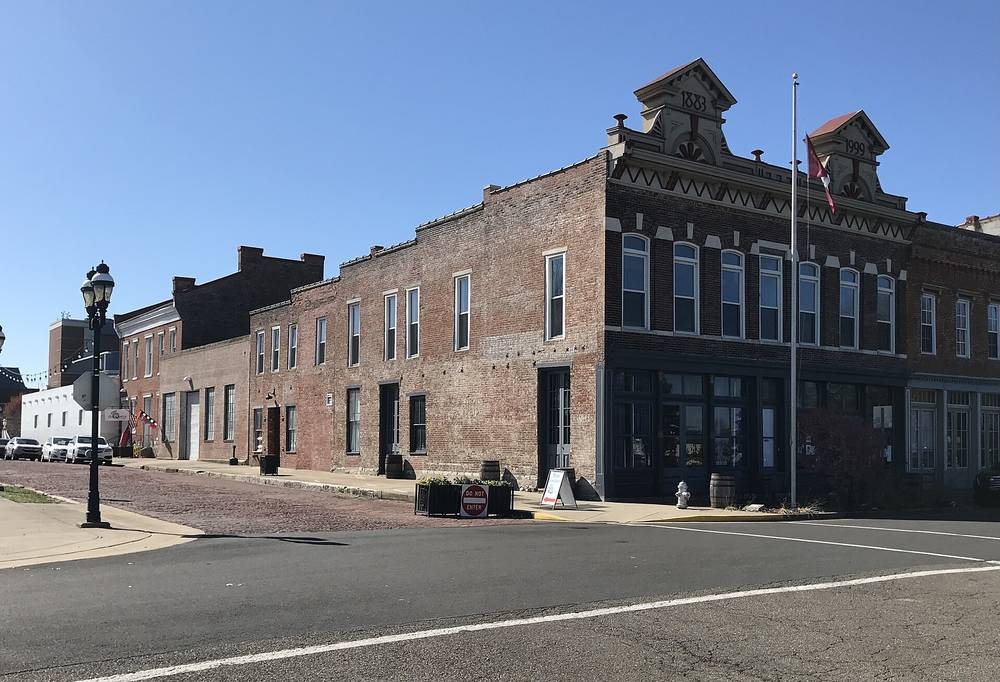

미국 켄터키 퍼듀카 공립학교, 폐교 부지 태양광 단지 전기 지역 전력회사에 파는 계약 승인…해마다 2만~2만5,000달러 절감 예상

2024년 받은 연방 에너지부 보조금 87만5,000달러로 옛 포리스트힐스 학교 부지에 지어 올여름 완공, 교육감 "절감액은 학교 안전에" 구상…배터리 저장장치는 앞으로의 바람, 학생 현장 학습·수업 단원도
미국 켄터키주 퍼듀카 공립학교 교육위원회가 2일(현지시간) 임시 회의를 열어, 학군 태양광 단지가 만든 전기를 지역 전력회사 퍼듀카 전력(Paducah Power System)에 되파는 계약을 승인했다. 태양광 단지는 문을 닫은 옛 포리스트힐스 학교 부지에 들어섰으며, 학군이 2024년 따낸 미국 에너지부 보조금 87만5,000달러로 지어 올여름 공사를 마쳤다. 도널드 샤이블리(Donald Shively) 교육감은 이번 승인이 계약의 마지막 절차로 이제 서명만 남았고, 전기는 도매가로 팔게 된다고 설명했다. 학군은 엔지니어링 분석을 근거로 해마다 2만~2만5,000달러를 아낄 수 있을 것으로 보수적으로 내다봤으며, 교육감은 이 돈을 학교 안전에 쓰고 싶다는 구상을 밝혔다. 학군은 앞으로 배터리 저장장치를 붙여 여름·겨울 수요가 몰리는 시간에 전기를 팔 수 있기를 바라고 있고, 이를 퍼듀카 전력과도 이야기했다고 전했다. 단지는 교육에도 쓰여 맥냅 초등학교 4학년이 이미 현장 학습을 다녀왔고, 교사들은 1년 넘게 초·중·고 프로젝트 학습 단원을 만들어 해마다 몇 개씩 늘려 가고 있다.
시민에너지 관점
놀던 폐교 부지 한 곳이 해마다 2만~2만5,000달러를 학교로 돌려줄 수 있다는 계산은, 학교와 공공 부지가 지역의 작은 발전소가 될 수 있다는 점을 보여 준다. 학교가 전기 장사까지 떠안을 수 있느냐는 우려가 있지만, 영국의 학교 에너지협동조합(Schools' Energy Co-operative)은 주민 출자로 학교 지붕에 태양광을 달고 학교에 전기를 공급하며 남은 이익을 학교에 돌려주는 방식으로 학교의 짐을 덜어 왔다. 학교·학부모·주민이 함께 설비의 주인이 되면 전기 수익이 교육과 지역 안에 머물고, 학생들은 에너지 전환을 교과서가 아니라 자기 동네에서 배운다. 국내 교육청도 학교 지붕과 유휴 부지를 외부 임대에만 맡기지 말고 학부모·주민 출자 협동조합이 함께 소유하는 길부터 열어야 한다.
출처: WPSD Local 6 2026-11-02 Ben Overby 원문 보기
米ケンタッキー州パデューカ公立学校、廃校跡地の太陽光発電所の電力を地元電力会社に売る契約を承認…年2万〜2万5,000ドルの節約見込み
2024年に得た連邦エネルギー省の補助金87万5,000ドルで旧フォレストヒルズ校跡地に建設し今夏完成、教育長「節約分は学校の安全に」と構想…蓄電池は今後の希望、児童の校外学習や授業単元にも
米ケンタッキー州のパデューカ公立学校教育委員会は2日（現地時間）の臨時会合で、学区の太陽光発電所がつくる電気を地元の電力会社パデューカ・パワー（Paducah Power System）に売り戻す契約を承認した。発電所は閉校した旧フォレストヒルズ校の跡地にあり、学区が2024年に獲得した米エネルギー省の補助金87万5,000ドルで建設され、今夏に工事を終えた。ドナルド・シャイブリー（Donald Shively）教育長は、今回の承認が契約の最後の手続きで、残るのは署名だけだとし、電気は卸売価格で売ると説明した。学区はエンジニアリング分析に基づき、年2万〜2万5,000ドルを節約できると控えめに見込んでおり、教育長はこの資金を学校の安全に充てたいとの構想を示した。学区は将来、蓄電池を加えて夏と冬の需要が集中する時間帯に電気を売れるようになることを望んでおり、この点をパデューカ・パワーとも話し合ったという。発電所は教育にも使われ、マクナブ小学校の4年生がすでに校外学習で訪れたほか、教員たちが1年以上かけて小中高のプロジェクト学習単元を作り、毎年いくつかずつ増やしている。
市民エネルギーの視点
使われていなかった廃校跡地1カ所が毎年2万〜2万5,000ドルを学校に戻せるという試算は、学校や公共用地が地域の小さな発電所になりうることを示している。学校が電力事業まで背負えるのかという懸念はあるが、英国の学校エネルギー協同組合（Schools' Energy Co-operative）は、住民の出資で学校の屋根に太陽光を設置して学校に電気を供給し、残った利益を学校に還元する方法で学校の負担を軽くしてきた。学校・保護者・住民がともに設備の持ち主になれば、電力の収益は教育と地域の中にとどまり、子どもたちはエネルギー転換を教科書ではなく自分の町で学ぶ。韓国の教育庁も、学校の屋根や遊休地を外部への貸し出しだけに任せず、保護者・住民が出資する協同組合がともに所有する道から開くべきだ。
出典: WPSD Local 6 2026-11-02 ベン・オーバービー（Ben Overby） 原文を読む
美国肯塔基州帕迪尤卡公立学校批准将废弃校址光伏电站电力出售给当地电力公司的合同…预计每年节省2万至2.5万美元
用2024年获得的联邦能源部87.5万美元补助在原森林山学校旧址建成、今夏完工，学监设想"节省的钱用于校园安全"…储能电池是未来的希望，还用于学生实地参观和课程单元
美国肯塔基州帕迪尤卡公立学校教育委员会2日（当地时间）召开临时会议，批准将学区光伏电站所发电力回售给当地电力公司帕迪尤卡电力（Paducah Power System）的合同。电站位于已关闭的原森林山学校（Forest Hills School）旧址，由学区2024年争取到的美国能源部87.5万美元补助建成，今年夏天完工。学监唐纳德·夏布利（Donald Shively）表示，此次批准是合同的最后一道程序，只剩签字，电力将按批发价出售。学区根据工程分析保守估计每年可节省2万至2.5万美元，学监表示希望把这笔钱用于校园安全。学区还希望将来加装储能电池，在夏冬两季用电高峰时段售电，并称已与帕迪尤卡电力讨论过此事。电站也用于教育，麦克纳布小学四年级学生已前往实地参观，教师们花了一年多时间开发小学、初中和高中的项目式学习单元，每年陆续增加。
市民能源视角
一块闲置的废弃校址每年能为学校带回2万至2.5万美元，这一测算说明学校和公共用地可以成为社区的小型发电站。有人担心学校难以承担售电业务，但英国的学校能源合作社（Schools' Energy Co-operative）通过居民出资在学校屋顶安装光伏、向学校供电并把剩余收益返还学校，一直在为学校减轻负担。学校、家长和居民共同成为设备的主人，电力收益才会留在教育和社区之中，学生也能在自己的家乡而不是课本里学习能源转型。韩国的教育厅也不应只把学校屋顶和闲置土地出租给外部，而应首先打开由家长和居民出资的合作社共同拥有的道路。
来源: WPSD Local 6 2026-11-02 本·奥弗比（Ben Overby） 查看原文
Paducah public schools in Kentucky approve deal to sell power from solar field on former school site to local utility, expecting to save $20,000 to $25,000 a year
Built on the old Forest Hills School campus with an $875,000 federal Department of Energy grant won in 2024 and finished this summer; superintendent's vision is to put the savings into school safety; battery storage is a hope for the future, and students already use the site for field trips and lessons
The Paducah Public Schools Board of Education in Kentucky approved an agreement at a called meeting on Monday, Nov. 2, to sell electricity from the district's solar field back to the local utility, Paducah Power System. The solar field sits on the campus of the former Forest Hills School and was built with an $875,000 U.S. Department of Energy grant the district secured in 2024, with construction finished this summer. Superintendent Donald Shively said the board's approval was the final step in the agreement, that only signing the contract remains, and that the power will be sold at a wholesale rate. Based on an engineering analysis, the district conservatively expects to save $20,000 to $25,000 a year, and Shively said his vision is to put that money into school safety. The district hopes to add battery storage later so it can sell power at summer and winter peak times, and said it has discussed the idea with Paducah Power. The site also serves as a classroom: fourth graders from McNabb Elementary have already visited on a field trip, and a team of teachers has spent more than a year building project-based learning units for elementary, middle and high school, adding a few each year.
Citizen Energy View
The estimate that one idle former school site can return $20,000 to $25,000 a year to the district shows that schools and public land can become small local power plants. Some worry that schools cannot take on the business of selling electricity, but in Britain the Schools' Energy Co-operative has eased that burden by using residents' investment to put solar panels on school roofs, supply the schools with power and return surplus profits to them. When schools, parents and residents own the equipment together, the income from electricity stays in education and in the community, and students learn about the energy transition in their own neighbourhood rather than from a textbook. Korea's education offices, too, should stop leaving school roofs and idle land only to outside leases and first open a path for cooperatives funded by parents and residents to own them together.
Source: WPSD Local 6 2026-11-02 Ben Overby Read the original